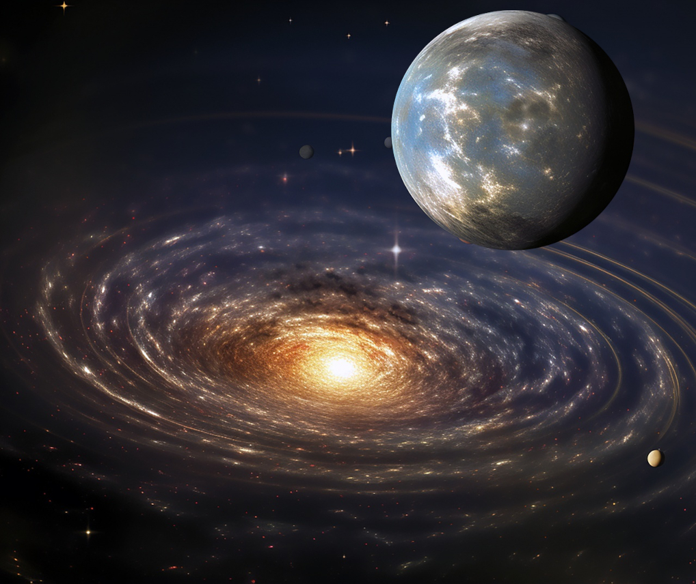

Es ist vielleicht eine der bekanntesten Geschichte der Bibel: Am Anfang schuf Gott Himmel und Erde. Wir stellen uns hier vor, dass die Erzählungen aus der Sichtweise eines früheren Menschens gemacht wurden. Jener Mensch hätte unmöglich das wissenschaftliche Wissen besitzen können, das wir heutzutage für selbstverständlich halten. Es ist wahrscheinlich aus diesem Grund, dass der Prozess des Schöpfens von Licht und Himmel so beschrieben, als ob die Erde im Mittelpunkt stünde. Die Erde; wüst, leer und dunkel; dient hier als Observierungsraum, aus dem wir alles andere erleben können. Interessant ist aber schon die Tatsache, dass die Autoren die Reinfolge von manchen Entwicklungen korrekt errieten: Bereichen von Wasser und Land werden etabliert, gefolgt vom Wachsen der Pflanzen. Später werden die Lebewesen des Ozeans erwähnt, aber auch mit dem Erscheinen der Vögel.
Es ist aber hier wichtig zu erwähnen, dass es nicht der Hauptzweck der Erzählungen wäre, akkurat zu sein. Eine gute Geschichte zieht ihre Leser bzw. Zuhörer in deren Bahnn, erweckt dabei Begeisterung, Bewunderung und Hoffnung. Wir können uns vorstellen, dass die Entstehungsgeschichte darin auf jeden Fall erfolgreich gewesen ist, denn die Geschichte ist nicht nur faszinierend, sie verleiht ein Gefühl des wichtig seins. Die Geschichte ist tatsächlich die ultimative Entstehungsgeschichte der Menschheit. Unter anderem etabliert die Geschichte das Vermögen Zeit, also Tage und Jahre, mit Hilfe des Lichts zu dokumentieren, aber auch die Tradition den 7. Tag als Tag der Ruhe zu betrachten. Im Garten Edens gibt es reichlich Essen, Wasser und sogar Bedellium, den Edelstein Onyx und Gold. Arbeiten musste man nicht! Schließlich wird die Tradition der Beziehung zwischen Mann und Frau etabliert, dazu die für die Menschheit wichtige Rolle der Fortpflanzung. Es ist die Vorstellung eines unbeschwerten und einfachen Leben: wahrlich ein Paradies. Ein Leben, das die Menschheit hätte für immer genießen können, aber Gefahr lauerte schon vor der Tür. Dazu später mehr!
Fazit: Die Entstehungsgeschichte spielt mehrere wichtige Rollen: Sie ist unsere Einführung in die faszinierende Welt der Bibel, sie bewundert, macht den Leser neugierig, denn man will wissen, wie die Geschichte weiter geht. Mehr noch stellt sie die Menschen und die Erde in den Mittelpunkt. Die Welt und alles was darin befindet, wurde für uns erschaffen. Wichtige Traditionen und die Grundräson für unsere Existenz werden etabliert. Die Gechichte wird scheinbar aus der Sichtweise einer Person erzählt, die erst viel später existierte, denn es wird auf Konzepte hingewiesen, die für Adam zu der Zeit hätten komplett unbekannt sein müssen; z.B. die Erwähnung des Begriffs „Jahr”, weil es noch kein Jahr gegeben hätte; oder die Erklärung: „Darum wird ein Mann Vater und Mutter verlassen und an seinem Weibe hangen.” Da weder Adam noch Eve zu der Zeit Kinder hätten, wäre das Konzept ihnen noch fremd. Nein, hier geht es, um die Etablierung bzw. Begründung des Ursprungs von Traditionen für neue Leser und Zuhörer der Geschichte. Die Entstehungsgeschichte ist dazu da, um genau diese Leute für die Geschichte und Lektionen der Bibel zu begeistern, und gleichzeitig kulturelle Tradiotionen und Normen zu verfestigen.